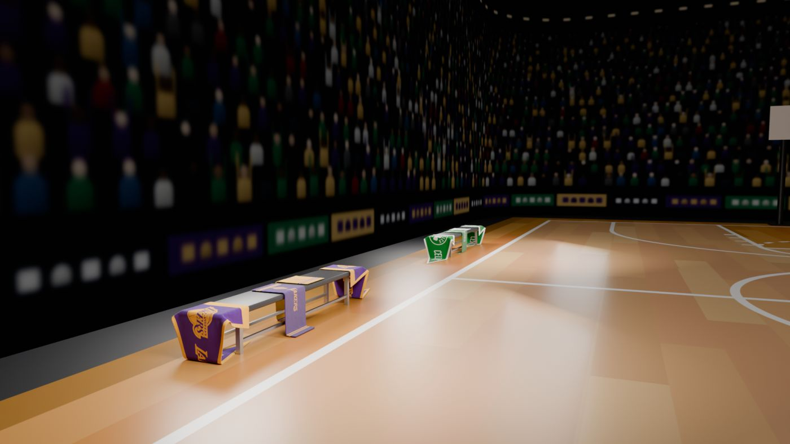
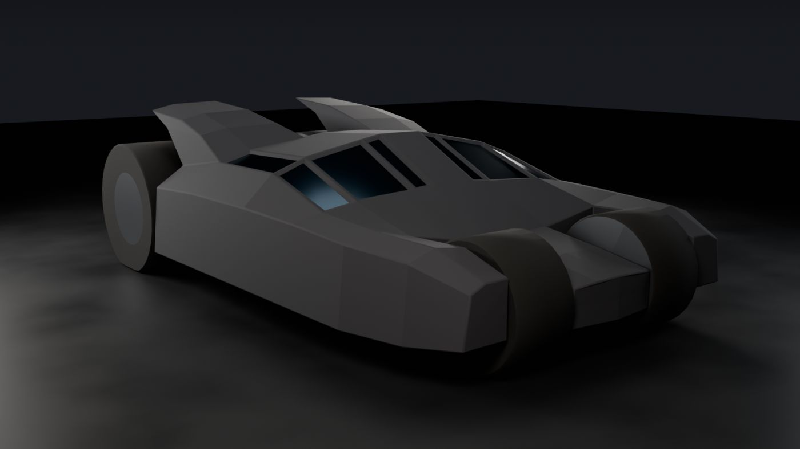
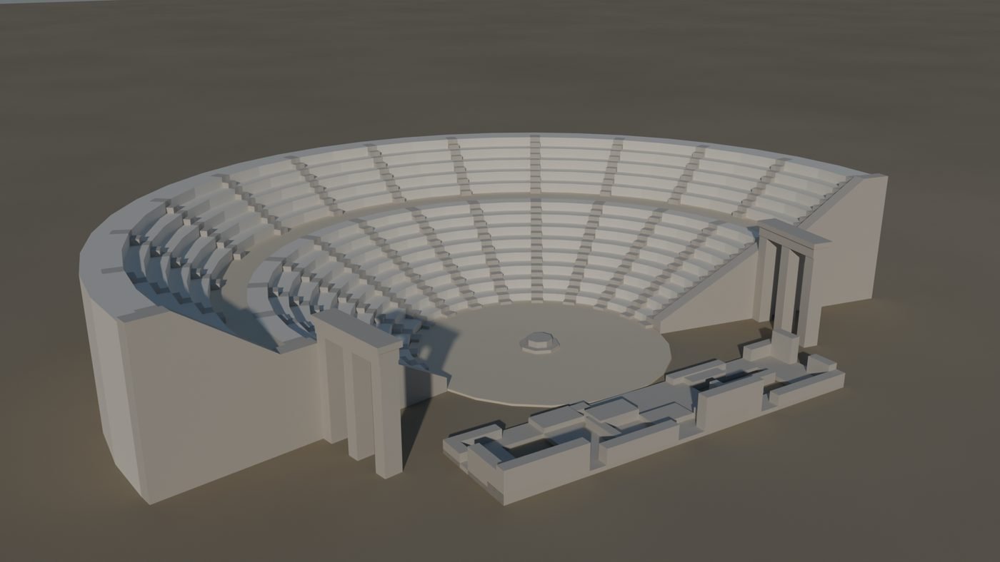

Five Scenes in Blender
A from-zero guide to rebuilding your five course projects by hand in Blender's interface: the basketball court, the team benches with draped cloth, the table of fruit plates, a low-poly armoured vehicle modelled from a single box, and the ancient theatre of Epidaurus.





What this guide is
The first three scenes were built by writing commands into Blender, the fourth was modelled over a set of orthographic drawings, and the fifth was lathed from a single drawn profile. This guide turns every one of those steps into clicks, menus and shortcuts you can do yourself. Every size, position, colour and setting below was read straight out of your own .blend files, so if you follow the steps your result will match the renders in your renders folders.
You don't need any modelling experience. Part 1 teaches the ideas the projects rely on, one at a time and in the order you'll need them. Parts 2 to 6 are the projects, each building on the one before:
| Project | What you learn | Time |
|---|---|---|
| 01 Basketball court | Primitives, exact transforms, parenting, image materials, area lights, keyframe animation, rendering a video | 3–4 h |
| 02 Team benches | Reusing a scene, cloth simulation, modifier stacks, layered fabric materials, three-point lighting, depth of field, many cameras | 4–6 h |
| 03 Fruit table | Spinning a profile into a plate, reshaping spheres into fruit, curves for stems, glass, procedural textures, subsurface skin | 6–8 h |
| 04 Warmobile | Modelling from orthographic drawings, box modelling from one cube, exact cuts with Bisect, extruding parts instead of cutting holes, octagonal wheels, X-symmetry editing, game-ready checks (manifold, one island, face budget), flat shading | 5–7 h |
| 05 Ancient Theatre | Drawing a profile vertex by vertex, lathing it with the Screw modifier, capping open ends, copying parts around an axis, mirroring, low-poly gates and ruins from boxes, outdoor sun-and-sky lighting | 3–4 h |
How to read the instructions
- Shift+A means hold Shift and press A. Keyboard shortcuts act on the editor under your mouse pointer, so keep the pointer over the 3D view when you press them.
- Add › Mesh › UV Sphere means open the Add menu, then Mesh, then click UV Sphere.
- Numbers like (0, 6.935, 0.12) are X, Y, Z positions in metres. Angles are in degrees.
- Colours like (0.95, 0.95, 0.95) are typed into the RGB fields of Blender's colour picker. They are Blender's internal (linear) values, so they won't match a hex code.
- Boxes marked In your file show exact values or details from your projects. Boxes marked Why explain the reason behind a step. Read the Why boxes: they are what lets you build your own scenes later.